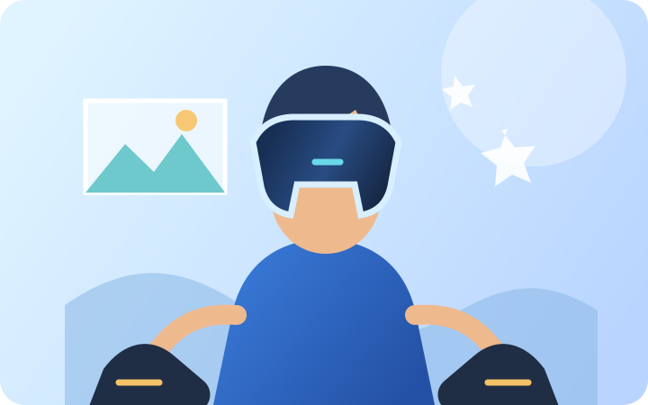
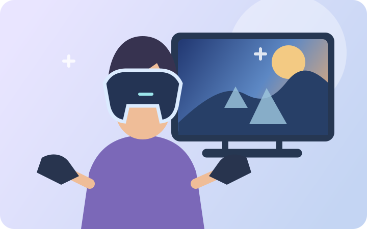
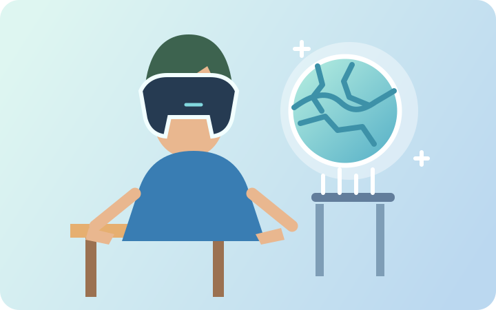
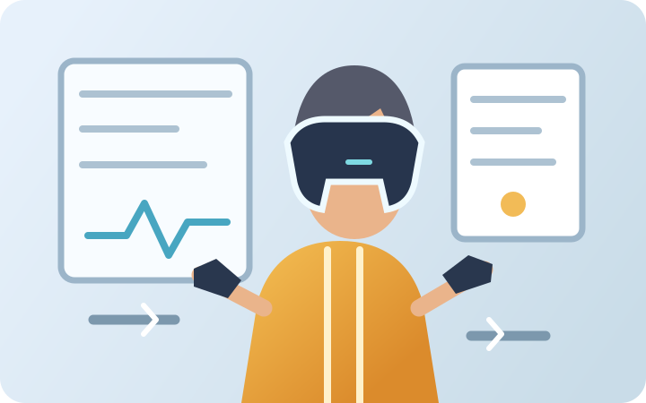
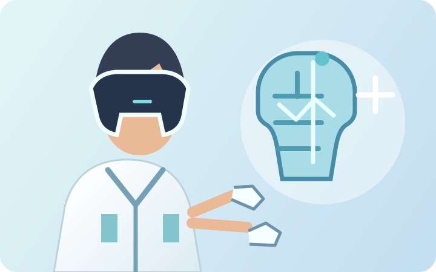

Experiências Que Ultrapassam A Realidade!

É uma tecnologia que permite ao usuário interagir com ambientes digitais de forma imersiva. Os óculos de realidade virtual utilizam diferentes recursos para criar essa experiência, desde imagens em 3D até o acompanhamento dos movimentos e efeitos sonoros e de vibração. A seguir, veremos três dos principais aspectos do funcionamento dessa tecnologia.
-
Visão 3D
Os óculos possuem duas telas, uma para cada olho, criando a sensação de profundidade e imagens tridimensionais.
-
Interação e Movimento
A imagem acompanha os movimentos da cabeça do usuário, tornando a experiência mais realista e imersiva.
-
Recursos de Imersão
Alguns modelos possuem rastreamento ocular, áudio 3D e vibração, aumentando a sensação de estar dentro do ambiente virtual.
Headset
Dispositivo responsável por exibir o ambiente virtual e proporcionar imersão visual.
Controles
Permitem interagir com objetos e elementos dentro do ambiente virtual.
Sensores
Detectam movimentos da cabeça, das mãos e do corpo para acompanhar o usuário no ambiente virtual.
Áudio e Vibração
Sons e respostas táteis ajudam a aumentar a sensação de presença e imersão.
História
Os primeiros passos:
Charles Wheatstone desenvolveu os óculos estereoscópicos, capazes de criar uma sensação de profundidade ao combinar duas imagens. Décadas depois, em 1935, o escritor Stanley Weinbaum imaginou óculos capazes de proporcionar experiências com imagens, sons e cheiros — uma ideia bastante próxima da VR moderna.
A tecnologia começa a surgir:
Morton Heilig criou o Sensorama, um dispositivo que combinava imagens, sons, movimento e aromas para criar uma experiência imersiva. Em 1968, Ivan Sutherland e Bob Sproull desenvolveram a Espada de Dâmocles, considerada um dos primeiros headsets funcionais de realidade virtual.
A popularização e os desafios:
a VPL Research ajudou a consolidar o termo “Realidade Virtual” e desenvolveu dispositivos como luvas e óculos digitais. Nos anos 1990, a tecnologia chegou aos videogames, mas muitos produtos apresentavam limitações de preço, conforto e qualidade, fazendo com que o interesse do público diminuísse.
O renascimento da VR:
em 2012, o Oculus Rift ganhou destaque após uma campanha no Kickstarter, ajudando a popularizar novamente a realidade virtual. A partir daí, empresas como Sony, HTC, Google e Samsung passaram a investir na tecnologia, que atualmente possui aplicações em jogos, educação, ciência, treinamento e simuladores.
Criadores

Morton Heilig
Desenvolveu o Sensorama, nos anos 1950–60, uma máquina que combinava imagens 3D, som, movimento, vento e odores para criar uma experiência imersiva. É considerado um dos pioneiros da RV.

Ivan Sutherland
Em 1968, criou com seu aluno Bob Sproull o Sword of Damocles, um dos primeiros sistemas de realidade virtual com visor montado na cabeça conectado a um computador.

Jaron Lanier
Foi fundamental para a popularização da realidade virtual nos anos 1980. Fundou a VPL Research, que desenvolveu equipamentos como a DataGlove e o EyePhone. Fontes atribuem a ele a criação ou popularização do termo “virtual reality”.

Thomas Furness
Engenheiro que trabalhou durante décadas no desenvolvimento de sistemas de visualização e simuladores de voo. É frequentemente chamado de um dos “avôs” da realidade virtual e teve grande influência no desenvolvimento de interfaces imersivas.
Áreas de atuação

Entretenimento e Jogos
A VR permite que o usuário entre em ambientes digitais e interaja com eles, tornando jogos e outras experiências de entretenimento mais imersivos.

Filmes e Experiências Audiovisuais
Os óculos podem proporcionar uma forma diferente de consumir conteúdos, criando ambientes virtuais que aumentam a sensação de estar dentro da experiência.

Educação
Escolas e instituições podem utilizar a realidade virtual para criar aulas e experiências interativas, permitindo explorar lugares, acontecimentos históricos e conceitos de maneira mais visual.

Trabalho e Treinamento
Empresas podem utilizar a VR em treinamentos, simulações e reuniões virtuais, possibilitando praticar determinadas atividades em ambientes controlados.

Saúde e Medicina
A tecnologia pode auxiliar na formação de profissionais por meio de simulações e também ser utilizada em determinadas aplicações de reabilitação e terapias.
Comunicação e Interação Social
Ambientes virtuais permitem que pessoas de diferentes lugares se encontrem, conversem e participem de atividades por meio de avatares, criando novas formas de interação digital.
Explore o Meta Quest 3 em 3D
Arraste para girar o modelo e use o scroll ou a pinça para aproximar.
O modelo interativo não carregou; a imagem do óculos continua disponível.
Arraste com o mouse ou o dedo para girar o óculos
Bibliografia
Créditos - Orientadores
Profª Bruna Cação Ribeiro
Licenciatura em Letras Português e Inglês
Profª Célia Aparecida Barufaldi
Tecnóloga em Processamento de Dados
Especialista em Análise de Sistemas
Especialista em Redes de Computadores
Prof.Ricado Matias de Oliveira
Licenciatura em Letras Inglês, Português e Espanhol
Pedagogia
Gestão Empresarial
Créditos - Desenvolvedores
Henrique da Costa Silva
Responsável pelo Código
Mateus Brito Carvalho
Responsável pela Pesquisa
Isaque Kasbar Santos
Responsável pelo Design
Miguel Jesus de Souza Ribero
Responsável pera Pesquisa
Contato
Entre em contato com a gente